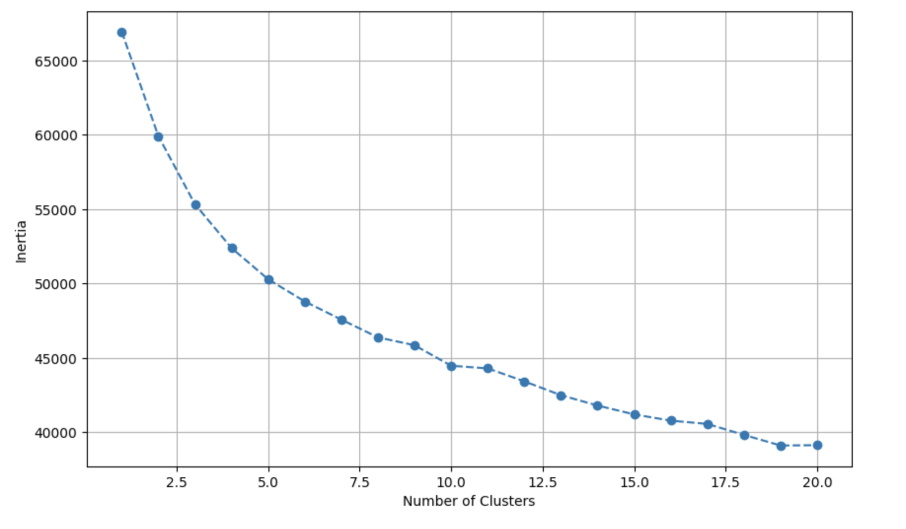
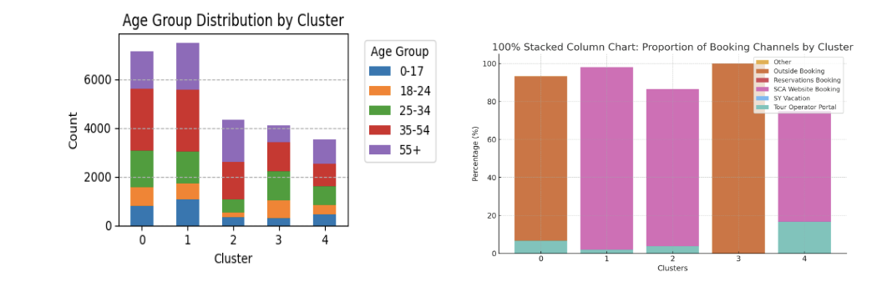
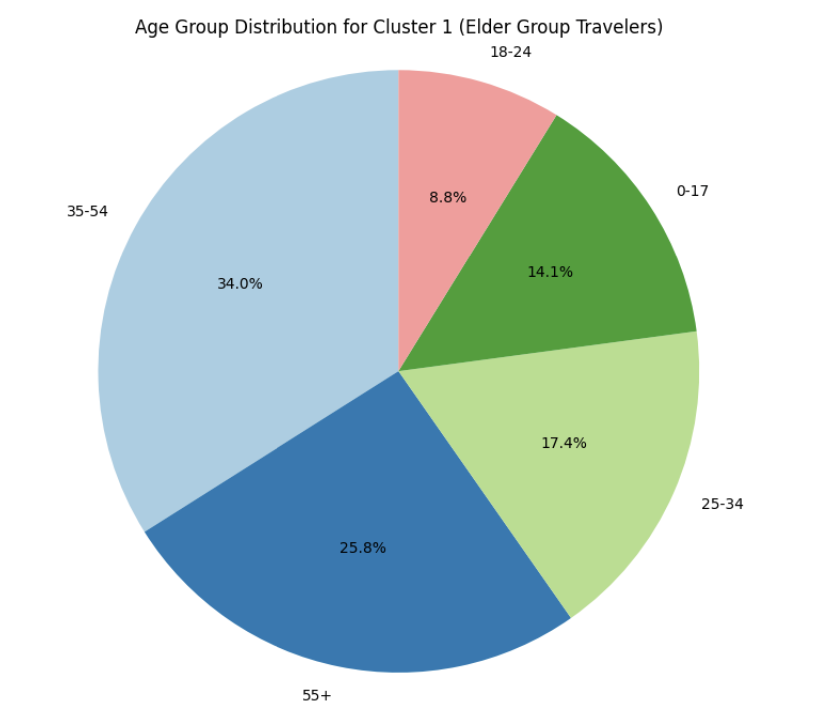
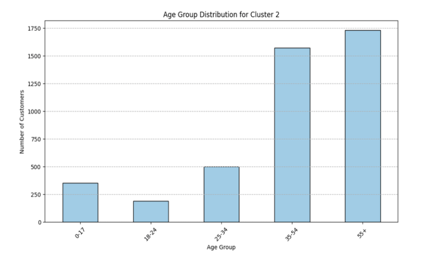
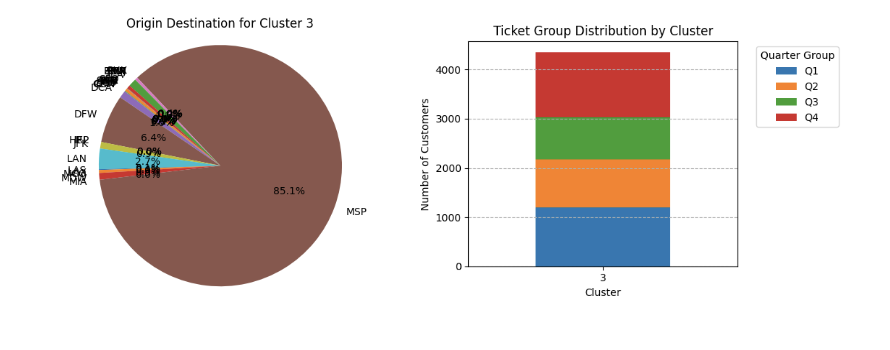
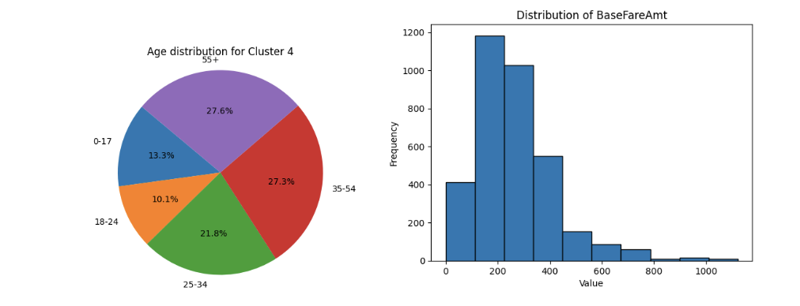

✈️ Customer Segmentation for Sun Country Airlines
📌 Project Overview
Sun County Airlines, a small U.S.-based carrier, faces pressure from larger competitors. To compete effectively, the company needs a deep understanding of its customers’ behavior, demographics, and travel preferences. This project uses unsupervised machine learning to segment customers into distinct groups for targeted marketing and product development.
🎯 Objectives
- Combine and clean customer datasets from Excel
- Identify key features relevant to customer behavior
- Apply KMeans Clustering to uncover unique customer groups
- Provide insights for strategic marketing decisions
🗂️ Data & Features
We used two spreadsheets from Sun County Airlines containing customer booking and demographic data. After merging the data using Pandas in Google Colab, we selected the following variables:
- Birthdate (Age)
- Booking Class & Channel
- Base Fare Paid
- Membership Status
- Product Type
- Route Details
- Group Size
- Booking Lead Time (days_pre_booked)
- Seasonality Habits
🔍 Methodology
We used K-means clustering after standardizing numerical features and encoding categorical ones. The Elbow method suggested that k = 5 was optimal.
🧮 Tools Used
- Python (Pandas, Scikit-learn)
- Google Colab
- Matplotlib & Seaborn
- Excel (raw input files)
📊 Key Segments & Marketing Strategies
Cluster 0 – Middle-Aged Standard Travelers
Most frequently fly solo or in pairs, book standard class, and fly year-round.
💸 Marketing Strategies:
• Boost Visibility on Travel Platforms: Partner with OTAs and meta-search engines (e.g., Expedia, Skyscanner) to secure premium listings and improve flight discoverability.
• Manage Reviews Proactively: Encourage satisfied customers to leave reviews and respond to feedback to build trust and reputation.
• Offer Destination Bundles: Create travel packages for popular routes (e.g., BOS, DFW, LAX) by bundling flights with hotels or car rentals to attract deal-seeking travelers.
Cluster 1 – Spring Squad Adventurers
Group travelers, often younger, travel mainly during spring with discounted fares.
💸 Marketing Strategies:
• Promote Spring Travel Deals: Offer group discounts, family packages, and senior travel incentives to appeal to larger group travelers.
• Bundle Group Packages: Partner with tour providers for all-inclusive deals that combine flights, hotels, and activities, optimized for multi-passenger bookings.
• Highlight Senior-Friendly Services: Emphasize amenities like priority boarding, wheelchair assistance, and personalized service.
• Drive Ufly Program Adoption: Incentivize loyalty signups with group booking bonuses, Q1 travel discounts, and senior-exclusive perks.
Cluster 2 – Adventurous Young Budget Travelers
Youngest cluster, budget-conscious, often use mobile booking channels.
💸 Marketing Strategies:
• Emphasize Comfort & Loyalty Benefits: Promote premium features like extra legroom, priority boarding, and UFly bonus points to appeal to their comfort-seeking preferences.
• Encourage Early Bookings: Launch Q4 campaigns like “Fly Home for the Holidays” with early-bird discounts and flexible booking options to match their organized travel habits.
Cluster 3 – Early Minneapolis Travelers
Frequent early months flights, loyal customers from Minneapolis hub.
💸 Marketing Strategies:
• Time Campaigns Around Booking Habits: Launch promotions in early October and late December to align with their 61-day pre-booking window and holiday shopping season.
• Seasonal Messaging: Use timely slogans like “Fly into the new year with this great offer!” to boost early-year travel bookings.
• Reward MSP Loyalty: Offer exclusive perks such as lounge access, Wi-Fi, or local discounts to retain Minneapolis-based flyers.
Cluster 4 – Age-Blend Bargain Birds
Wide age range, price-driven, high sensitivity to sales and promotions.
💸 Marketing Strategies:
• Highlight Affordability: Emphasize budget-friendly travel, value-for-money bundles, and exclusive online deals to attract this cost-conscious, age-diverse group.
• Inclusive Messaging: Use language that resonates with all age groups, focusing on the benefits of early planning and direct booking.
• Offer Age-Based & Bundle Discounts: Promote senior savings, youth specials, and flight + accommodation/car rental bundles to increase appeal and direct engagement on the SCA website.
🧾 Conclusion
Through the application of K-means clustering, we successfully identified five distinct customer segments for Sun Country Airlines. These clusters revealed meaningful patterns in booking behavior, travel timing, group sizes, and fare preferences. By segmenting customers in this way, the airline can personalize its marketing efforts, develop more tailored promotions, and optimize resource allocation for customer engagement.
This segmentation lays the groundwork for targeted marketing strategies, such as offering mobile booking incentives for younger travelers or loyalty perks for high-value solo fliers.
The process also demonstrated the power of combining raw Excel data with Python-based clustering and visualization tools to drive business insight. With scalable implementation, this approach could become part of a broader customer intelligence system at Sun Country.
🔄 Future Enhancements
- Incorporate additional behavioral data such as frequency of bookings and flight satisfaction
- Explore supervised models for predicting customer loyalty or churn
- Build a dashboard (Tableau or Streamlit) for real-time cluster monitoring
Team Member: Made Jessica Felicia, Fabián Cruz-Ruiz, Yi-En Ivy Liu, Grace Kim, Chieh-Yi Chou